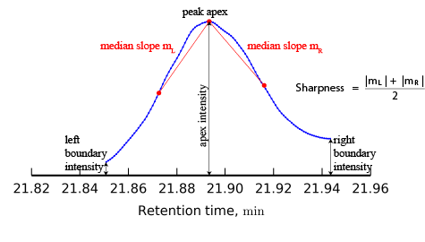

Spectral deconvolution
This method finds analytes by combining similar peaks into clusters and using their intensities to construct
fragmentation mass spectra. The following steps are performed:
- All EIC peaks in a deconvolution window are clustered based on proximity of their retention times. The user can
specify
minimum distance between clusters,
minimum number of peaks forming a cluster, and
minimum cluster intensity.
If preview is selected, the top right plot displays the result of
the clustering with dots corresponding to EIC peaks and colors corresponding to different clusters.
-
In each cluster, EIC peaks are filtered based on their sharpness and on their elution profiles. All EIC
peaks with shaprness below minimum shaprness are filtered out. If Find shared peaks is selected,
than shared peaks are filtered out as well. he user can specify minimum edge-to-height ratio and
minimum delta-to-height ratio that are used in determining shared peaks.
-
EIC peaks that have passed the filtering step, are clustered based on their elution profiles. The user can
specify shape-similarity tolerance: small tolerance corresponds to large number of clusters, while
large tolerance corresponds to a small number of clusters. If preview is selected, the result of the
clustering is shown on the bottom-right plot.
-
Each cluster corresponds to one analyte. Among all EIC peaks in the cluster, a model peak is chosen to represent
the elution profile of the analyte. If Choise of Model Peak based on Sharpness is selected, than
the EIC peak with the highest sharpness in the cluster is selected to be a model peak. If Choice of Model
Peak based on M/z value is selected, than the EIC peak with the highest m/z value in the cluster is
selected to be a model peak.
-
In order to build fragmentation spectra for analytes, each EIC peak is decomposed into a linear combination of
the model peaks with the weighting coefficients obtained by solving an optimization problem. These coefficients and
m/z value of the EIC peak contribute to the fragmentation spectra of the corresponding analytes.
Method definitions

- Sharpness
-
In order to find sharpness, the medians of the slopes of the lines connecting the
peak apex to its other data points are calculated on each side of the peak apex. The sharpness is defined
as the average of the two medians.
- Shared peak
-
EIC peak is considered to be shared (i.e. produced by two co-eluting analytes) if at least one of the following
conditions is satisfied:
-
its elution profile has several local maxima
-
its left boundary intensity divided by the apex intensity exceeds minimum edge-to-height ratio
-
its right boundary intensity divided by the apex intensity exceeds minimum edge-to-height ratio
-
the absolute difference between its boundary intensities divided by the apex intensity exceeds
by minimum edge-to-height ratio
Method parameters
- Min cluster distance (min)
- Minimum distance between any two retention-time clusters
- Min cluster size
- Minimum number of peaks in a cluster
- Min cluster intensity
- Minimum intensity of the highest peak in a cluster
- Find shared peaks
- If selected, shared peaks are determined and do not participate in the second clustering
- Min edge-to-height ratio
- Minimum value of a boundary intensity divided by the apex intensity of EIC peak that is considered to be
shared
- Min delta-to-height ratio
- Minimum value of the absolute difference of the boundary intensities divided by the apex intensity of EIC peak
that is considered to be shared
- Min sharpness
- Minimum sharpness of EIC peak that can participate in the second clustering
- Shape-similarity tolerance (0..90)
- Tolerance is used in the second clustering based on the similarity of peaks' elution profiles: small tolerance
corresponds to large number of clusters; large tolerance corresponds to a small number of clusters
- Choice of Model Peak based on
- In each cluster, a model peak is chosen. If Sharpness is used, than EIC peak with the highest sharpness in the
cluster is chosen to be a model peak. If M/z value is used, than EIC peak with the highest m/z value in the
cluster is chosen to be a model peak.
- Exclude m/z-values
- Optionally, the user can specify a list of deprecated m/z values such that EIC peaks with those m/z value could
not be chosen as model peaks. It is possible to specify single m/z values as well as ranges of m/z values. For example:
1-50, 73, 100